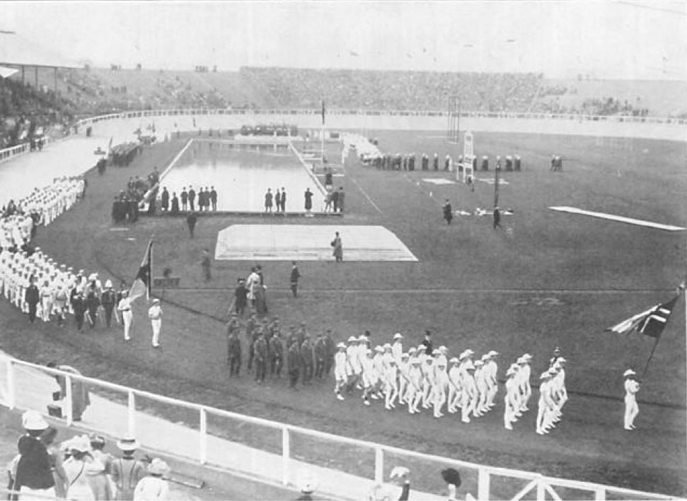
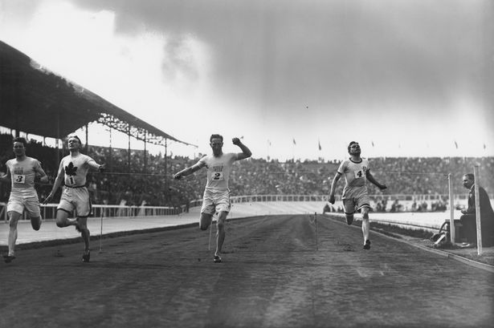

<DOCTYPE HTML>
<link rel="stylesheet" href="indexstyle.css">
<h1>
1908
</h1>
 
<h2>
UK
 
</h2>
  
The US starts the tradition of refusing to dip its flag.
This promotes a US reputation as ideologically representing freedom.
  


  
</HTML>
